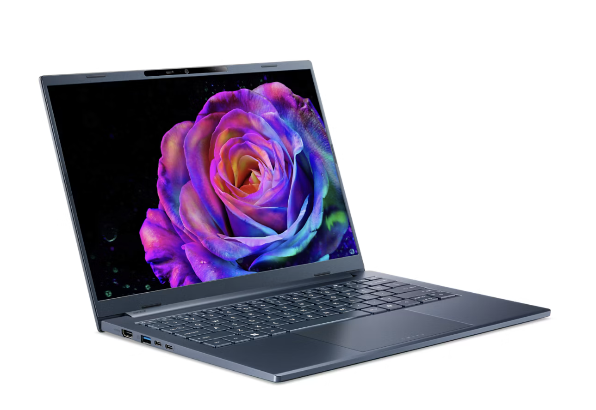

Concept Redesign · UX Case Study
把規格攤開，
讓比較留在原地。
Acer 筆電購買流程的概念性 redesign。這裡是兩頁可實際操作的 demo， 用來證明兩個靜態截圖說不出來的決策：重量必須能橫向掃視， 比較必須是瀏覽過程中的一個動作、而不是一趟離開再回來的旅程。

Swift Go 14 AI 看產品詳細頁範圍聲明
實作了什麼
- 筆電列表頁：六台機型、用途 tabs 與五組側欄篩選、排序、動態 empty state
- 完整比較流程：勾選 → Compare Bar → Overlay → 差異模式 → 關閉後上下文完整保留
- 產品詳細頁（Swift Go 14 AI）：捲動敘事、Spec Visualization 的 pin + scrub、全頁跟隨的購買列
- 桌面 1440 與手機 375 兩種形態，鍵盤可完整操作，支援「減少動態效果」